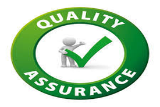
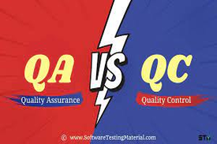

Quality Assurance
El QA o Quality Assurance es el encargado de asegurar la calidad del proyecto
mediante el uso de pruebas que el mismo crea, procurando que
el producto a entregar sea de la calidad mas optima posible

Atributos de calidad de Quality Assurance:
Definido: Debe ser concreto, completo,
descrito en todos sus pasos, fases o etapas.
Con entregables descritos bajo normas y estándares
establecidos.
Documentado: Debe estar escrito, incorporado en los procesos y procedimientos de la
organización. En lo posible, dentro de un
Sistema de Gestión de Calidad.
Practicado: Ser viable para la organización.
De simple aplicación y entendimiento para los
individuos que lo transitan, usan y avalan.
Medido: Control establecido a través de los
entregables y resultados obtenidos por el
ejercicio de cada proceso.
Diferencia entre QA y QC
El QC (Quality Control) testea un producto para asegurar que su calidad sea la esperada una vez terminado este, mientras que el QA no solo teste el producto si no todo el proceso de creacion junto con sus procediciemtos, asegurando la maxima calidad posible al producto por terminar.
